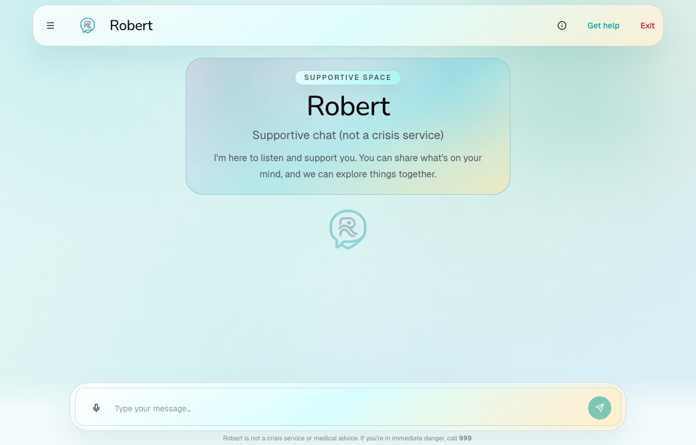
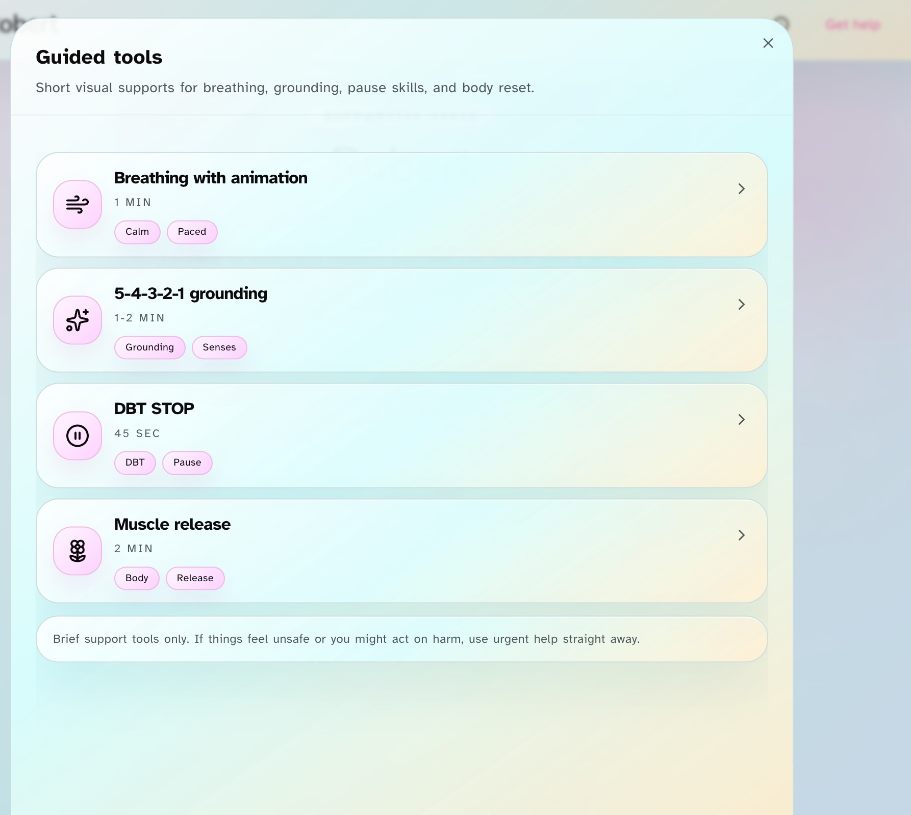

Dissertation · Support-Oriented Conversational AI
Robert: BPD-Informed Support Chatbot
A support-oriented research prototype that makes conversation controls, user choice, and safety boundaries visible rather than treating a warm response as sufficient evidence.
What Robert offers
Robert offers a calm, clearly bounded starting point for supportive conversation. The live interface foregrounds its non-crisis status, immediate help route, and quick exit rather than hiding them behind a polished chat experience.
Guided support tools
Short, user-selected activities for breathing, grounding, pause skills, and body reset. These are brief supports, not a comprehensive therapy programme.
Resources and help routes
Visible pathways to urgent help, self-help material, and ongoing support, with safety information available from the main interface.
Preference surfaces
Accessibility and interaction preferences, including readable presentation options, motion choices, and opt-in, device-local memory controls.
Live interface


Requirements that shaped the prototype
Meeting notes with Lily and Dr Mu informed the user-facing emphasis on a calmer, accessible between-session support experience. The final project treats those notes as requirements grounding, not as clinical or lived-experience validation evidence.
Validation before advice
Respond to distress without minimising it, forced positivity, diagnosis claims, or pseudo-clinical authority.
Agency and direct requests
Keep conversation non-directive while following through when a user explicitly asks for a practical coping tool.
Visible continuity
Make memory opt-in, user-triggered, and visible rather than relying on opaque personalisation.
Conservative escalation
Prioritise clear crisis-route visibility and UK-facing signposting over any claim of automated safeguarding.
How the benchmark connects
The benchmark comes first: it measures failure modes in candidate language models, including unfaithful reasoning, pressure yielding, silent bias, and continuity drift. Those results motivate Robert’s explicit controls: agenda state, move contracts, overseer checks, visible memory updates, and crisis-boundary handling.
This is an architectural hand-off, not a clinical validation chain. The benchmark identifies risks; Robert makes relevant controls inspectable; further clinician, lived-experience, and deployment evaluation remains outside the current claim.
Research boundary
Robert is a research prototype. It is not presented as therapy, diagnosis, a crisis service, or evidence of clinical effectiveness. Its contribution is the visible, auditable handling of conversational controls and safety boundaries.